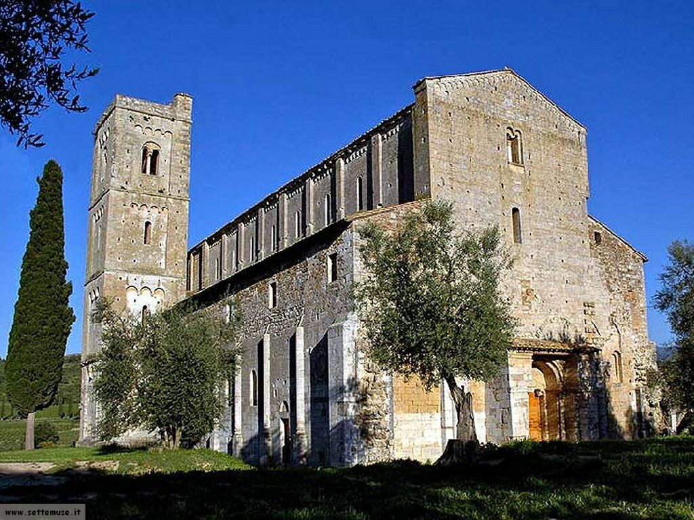
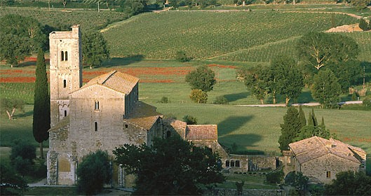

Nome: Amir
Cognome: Salama
Matricola: 441484
Link utilizzati per le ricerche:
Salve, la scelta della progettazione per questo homework è ricaduta sull'Abbazia di Sant'Antimo di Siena, nonostante non fosse molto semplice realizzarla nei tempi richiesti. Per questo motivo ho scelto di semplificare ragionevolmente il modello al fine di poter svolgere gli esercizi nel tempo dato a disposizione.
Le informazioni sull'abbazia sono state prese dai siti più attendibili, riportati in basso. Inoltre mi sono avvalso di numerose immagini disponibili sul web, tra planimetria e viste dal vivo, immagini satellitari di Google Maps e alcune informazioni da Wikipedia.
Le misure sono reali, anche se non sono disponibili in maniera completa, e il valore di unità adottato nel progetto corrisponde ad un metro.
Purtroppo la volontà di rifinire il più possibile i dettagli architetturali mi ha tolto del tempo da dedicare ad aspetti più piacevoli alla vista come la scelta di particolari colori ed effetti particolari.
Queste sono alcune delle immagini più rappresentative dell'Abbazia, in ogni caso ne ho caricate molti nell'apposito direttorio.

Seguono i link agli esercizi: